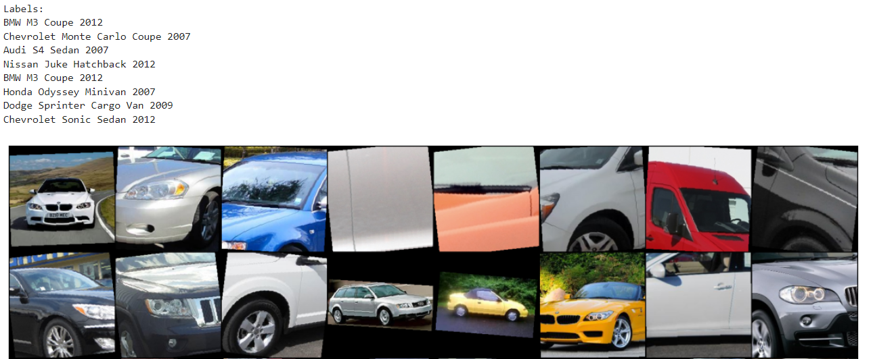
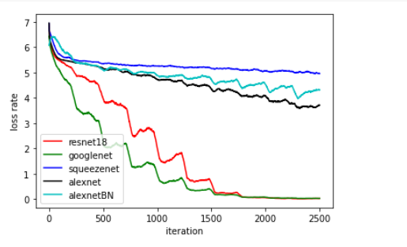
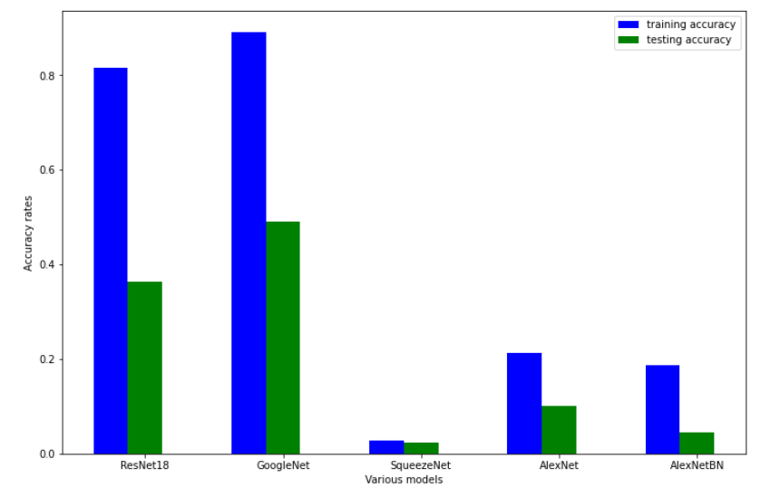
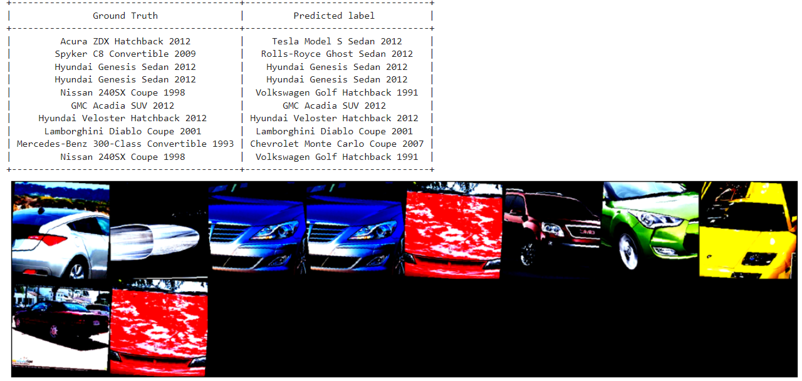

This project is designed to apply machine learning techniques and knowledge to train a model to predict
a car's make, model, and year from an image input. This project will help compare various neural network models
to identify which one works best for the task. It will use an existing dataset of car images and Python
code including existing libraries to accomplish the task.
The codebase can be found in Google Colab here.
The identification of a car can be done in several ways: the VIN number which is visible under the windshield,
the license plate number which is usually in the front and the back, or the style of the car such as the design
of the emblem, headlights, tailights and other features. Nowadays, in US there are many traffic cameras, which
help track down criminals when there's a need. However, if a criminal switched out the license plate to a fake one,
and if a witness knows a make, model, and year of a criminal's car then a viable option is to consistently scan
traffic camera footage and using machine learning with object detection we can narrow down the search options
by identifying the location by searching for a car based on make, model, and year.
We can apply machine learning and neural network techniques to train a model on an existing dataset to supply
an image input and predict which car it is based on the mentioned attributes.
We will be using a dataset prepared by Jonathan Krause at Stanford, which can be found
here. The dataset contains
8,144 images for training and 8,041 for testing our model. Since the format of this dataset is not
exactly what we will be looking for we'll have to augment couple items. First, the labels are stored
in a Matlab format and they will have to be read into our Python framework that will be used. Second,
the dataset reader will have to read the Matlab file and process the column that identifies if an image
is to be used for training or testing, and split the images into these categories. Lastly, since the images
are not the same resoultion, the datareader will have to crop the images all to a standard size which is
224 x 224, the size preferred by pretrained Pytorch models.
The figure below shows that the datareader rotated some images by up to 7 degrees so that the weights would
not latch onto one specific feature during training.

The code was implemented with the help of Joe Redmon's tutorial which is linked in References section and Pytorch Torchvision
library's existing models such as Resnet18, GoogleNet, SqueezeNet, and AlexNet.
More specifically, pretrained models were used in order to minimize the number of epochs needed to achive higher testing
accuracy.
On top of using an existing AlexNet model, a custom version of AlexNet is implemented to use batch normalization.
This custom verision was attempted to better understand workings of convolutional neural networks and gain more
practice with code implementation. However, the results from this custom
network did not show to make great improvements, which is discussed in the overview section.
Throughout testing I used various weight decays, learning rates, and epochs to identify the best prediction results
and to decrease the effects of overfitting. With most of the models, a lot of overfitting was present.
Although the data was augmented, randomly horizontally flipped and randomly rotated by 7 degrees. The standard values
of decay such as .0005 and momentum value of .9 were used. For most of the mentioned models, learning values of .01 were used,
however for SqueezeNet a learning value of .001 was used because the loss returned of NaN showed that there was a
gradient explosion; as a result the learning rate was lowered.
The best results were achieved by GoogleNet. It did not have as much of a case of overfitting as other
models. Additionally, it had the best testing accuracy of 52.2%; as comparison, the second best was ResNet18
which had 40% accuracy. Unfortunately after the models were trained there was severe case of overfitting. The worst
was Resnet18, which had a difference of 60% between the training accuracy and testing accuracy.
The worst performing model was SqueezeNet. Although there waasn't any overfitting, the training accuracy was
3% and testing accuracy was 2.6%. The behavior is explainable because it uses less neural network layers than the other networks.
The custom AlexNet with batch normalization showed about the same training and testing accuracies as the original AlexNet.
Below we can visualize the difference between various models, the clear winners are GoogleNet and ResNet18.
The first figure shows the comparison of losses. The second figure shows the accuracy rates.


Finally, we can see below that about half of cars were matched up correctly to the supplied
image. In the left column are the actual make, model, and years of cars and the right column are the predictions
made by the trained ResNet18 model.

To use this project in real life modifications should be applied. First of all, for the training of the model we can use more epochs that would allow the model more time to converge and bring better accuracy. Additionally, we could use Resnet50, which has more layers in the network to train the model. Lastly, for the implementation in real life, such as detecting cars from traffic camera video footage we would have to use object detection or segmenation to highlight all the cars that match a specific car make, model, and year search. This would allow operators to more easily scan accross all video footage to potentially locate any necessary vehicles.
https://colab.research.google.com/drive/1k4SpEurwjaG3a4AAIQraDFg_7Qa1Cat5#scrollTo=rQ1-ePKDcQod
https://ai.stanford.edu/~jkrause/cars/car_dataset.html
https://pytorch.org/vision/stable/models.html
https://colab.research.google.com/drive/1k4SpEurwjaG3a4AAIQraDFg_7Qa1Cat5#scrollTo=VgrhxQ_NOrAH
https://towardsdatascience.com/building-efficient-custom-datasets-in-pytorch-2563b946fd9f
https://towardsdatascience.com/how-to-load-a-custom-image-dataset-on-pytorch-bf10b2c529e0
https://medium.com/bivek-adhikari/creating-custom-datasets-and-dataloaders-with-pytorch-7e9d2f06b660